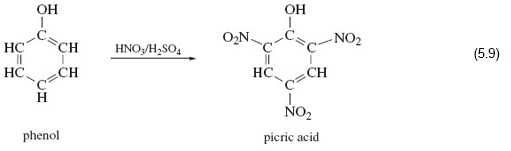

7 A closer look at functional groups
In order to probe further the enhanced reactivity of functional groups, take a look again at Structure 5.1 (hexan-1-ol).
CH3—CH2—CH2—CH2—CH2—CH2—OH 5.1
Which of the 21 atoms in hexan-1-ol have non-bonded electron pairs?
Only one; the oxygen atom of the functional group has two non-bonded electron pairs.
Chemical reactions often occur in steps; in each step, groups of atoms attach themselves to the molecule, undergo change, and then depart. Attractive points of attachment in a molecule will therefore make a reaction more likely.
Why are non-bonded electron pairs possible points of attachment?
They allow formation of dative bonds.
Such bonds cannot be formed by carbon and hydrogen atoms in hexan-1-ol, because all their outer electrons are used to form strong C—H and C—C bonds. This, then, is one reason why the —OH functional group in 5.1 is the most probable site for a reaction.
Another arises from the fact that functional groups often introduce electronegativity differences into an organic system.
What is meant by electronegativity?
This is the ability of an atom in a bond to attract bonding electrons towards itself.
For example, the oxygen atom is very electronegative.
Thus, in the C—O—H sequence of bonds in any alcohol, the oxygen atom attracts electrons from the adjacent carbon and hydrogen atoms (carbon and hydrogen have similar electronegativities). The oxygen atom of an alcohol therefore carries a fractional negative charge, and the carbon and hydrogen atoms carry fractional positive charges. Any one of the three atoms then becomes a possible point of attachment for the atom of a reagent that carries a fractional charge of opposite sign.
Finally, a reminder of a reservation made earlier about functional groups: the idea that their reactions are unaffected by the rest of the molecule is only an approximation.
This can be conveniently illustrated with reference to another powerful explosive.
Consider reaction 5.19.

In phenol, on the left of Reaction 5.19, an —OH group is attached to a benzene ring. Here if you react it with a mixture of concentrated nitric and sulfuric acid, in complete contrast to the examples you looked at earlier, the —OH group is untouched, and hydrogen atoms at three points on the benzene ring are replaced by the nitro group, —NO2.
The product is a yellow crystalline solid known as 2, 4, 6-trinitrophenol or picric acid, whose explosive power exceeds that of TNT.
Clearly expectations about the nitration of —OH functional groups were worked up from cases where the hydrocarbon skeleton is saturated; that is, all carbon valencies in the skeleton are used to form single bonds to either hydrogen or other carbon atoms. Evidently, the benzene ring, which is not saturated, enhances the reactivity of the hydrogen atoms attached to it, and simultaneously diminishes that of the attached —OH group. So the behaviour of a functional group can in actual fact be affected by its immediate environment.
In the next session you will be developing some ideas around molecular shape you met earlier, and finding out how the arrangement of atoms in three dimensions plays a key role in understanding chemical reactions.
OpenLearn - Discovering chemistry
 Except for third party materials and otherwise, this content is made available under a Creative Commons Attribution-NonCommercial-ShareAlike 4.0 Licence, full copyright detail can be found in the acknowledgements section. Please see full copyright statement for details.
Except for third party materials and otherwise, this content is made available under a Creative Commons Attribution-NonCommercial-ShareAlike 4.0 Licence, full copyright detail can be found in the acknowledgements section. Please see full copyright statement for details.